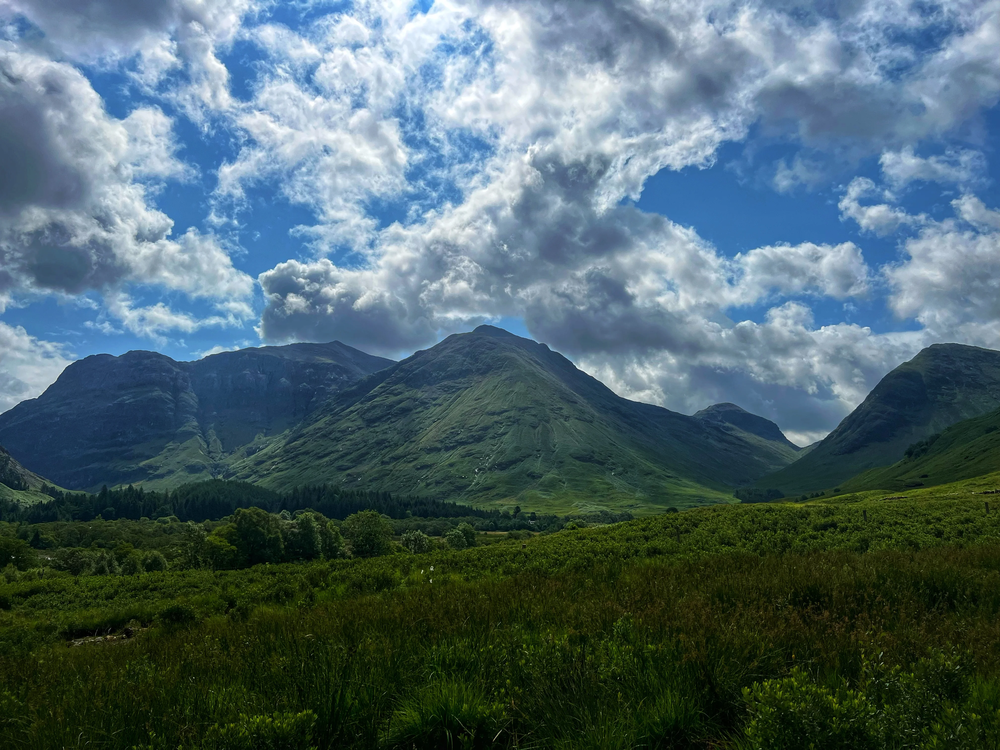

Where to be and when
Day 1 is arrival, settling in, and our first evening together at the Welcome Dinner. Your welcome email confirms the exact details — here's the general shape of the day.
🕔 First group meeting
Please meet in the lobby, ready to leave, at 5:00 PM. We'll then head out together for our Welcome Dinner.
Before then is usually arrival and settle-in time — check in (or store bags if you're early), freshen up, and get your bearings at your own pace.
🏨 Hotel check-in
Check-in is typically after 3:00 PM. If you arrive earlier, reception can usually store your main luggage until your room is ready, so it helps to keep essentials in a small day bag.
Edinburgh is a wonderful city to land in — if you're early, it's a good chance to wander the Old Town or Princes Street Gardens before we all meet later.
✈️ Airport transfers and arrivals
Trafalgar offers complimentary Day 1 airport transfers at set times. Please check your joining documents and welcome email for the exact timings and where to meet.
After collecting your luggage and coming through arrivals, look out for me. The meeting point is at International Arrivals Hall Number 2, next to Black Sheep Coffee — if you land at Arrivals 1, it's a short walk through to Arrivals 2.
Complimentary transfers run at set times and cannot be held — if you miss yours, official taxis from Edinburgh Airport are easy to find and the hotel is straightforward to reach.
If you have a private transfer booked through Trafalgar, the details and instructions will be in your joining documents.
🧭 Arrival note
Keep your hotel address, booking details, passport and phone easily accessible on travel day.
If your arrival timing changes significantly, contact the support number in your official documents as soon as possible.
What stays with you
One habit makes travel days much easier: keep the important things in your day bag, not your main suitcase.
🛂 Passport & travel documents
Know where your passport or photo ID is at all times, and keep it with you on travel days rather than packed in your main suitcase.
It is also good habit to carry some form of ID on your person day to day: passport, national ID card or driving licence all work.
✅ Day bag essentials
Your main suitcase goes into the coach hold on travel days and may not be accessible until you reach the hotel. Keep anything you might need during the day with you:
- Glasses, contact lenses or hearing aids
- Medication and prescription items
- Phone, charger and any cables
- Cards, cash and travel money
- A waterproof layer — this is Scotland
A useful rule: if you would miss it for a few hours, it belongs in your day bag.

Before you pack
These are the details that tend to make the biggest practical difference.
👟 Walking shoes
Edinburgh's Old Town cobbles, castle grounds, distillery floors and Highland viewpoints — comfortable, well-worn shoes make a genuine difference across the whole tour.
If you are unsure which pair to bring, bring your most comfortable ones.
🌦️ Weather and layers
Scottish weather can shift quickly — sunshine, rain and wind all in the same afternoon is fairly normal here, especially once we're into the Highlands and Skye.
A waterproof jacket you trust, a mid-layer, and comfortable shoes will do most of the heavy lifting. Forecasts are useful but treat them as a guide rather than a guarantee.
– good advice anywhere in the Highlands
🔌 Power adapters
Scotland uses the same UK Type G plug as the rest of the UK and Ireland — one adapter covers the entire tour.
🧳 Packing
Pack for usefulness rather than volume. This is a faster-paced tour with a hotel change most days, so lighter luggage is noticeably easier to live with.
We use audio listening devices on walking tours — disposable wired headphones are provided. These are not Bluetooth, so wireless earbuds will not connect. You are welcome to bring your own wired pair if you prefer.
The rhythm of it
From Edinburgh's Old Town, out to St Andrews and Pitlochry, deep into the Highlands for Culloden, Loch Ness, Eilean Donan Castle and the Isle of Skye, then south through Glencoe and Loch Lomond to Glasgow, with Stirling Castle and a whisky distillery along the way. Seven days, and barely a quiet one.
Some days are about the journey itself. Watching the landscape change as the city gives way to lochs, glens and single-track roads, with the scenery doing most of the talking.
Other days are about history and culture. What Culloden actually meant for the Highlands. Why Glencoe carries the weight it does. What Edinburgh Castle has seen from its rock. Learning it on the ground, with people who know the stories, changes how it stays with you.
This is a fast-moving tour — the pace is part of what makes it feel so full. There will be some early starts and long days in the Highlands, but most people settle into the rhythm surprisingly quickly.
I'll always let you know what's coming up, what to bring for the day, and anything worth knowing before we set off.
🚌 On the coach
Seat rotation happens daily, and I'll explain the system clearly on Day One.
Snacks are absolutely fine. Just avoid hot food, hot drinks and anything likely to melt, spill or perfume the entire coach by lunchtime. Please keep your seat area tidy — it's a shared space and it makes a real difference to everyone's day.
Seatbelts on whenever you are seated — it's a simple habit that matters.
🏨 Hotels vary
Highland hotels tend to be smaller and more traditional than city properties — full of character, sometimes with simpler facilities. Air conditioning isn't common in Scotland; if your room feels warm, reception can usually help.
Keep your passport, cards and valuables secure and close to you, particularly in busier parts of Edinburgh and Glasgow. A small bag that stays close to your body is worth considering on busier sightseeing days.
🚗 Our Driver
Our Driver covers real ground on this route — Highland roads, single-track lanes and mountain passes all take genuine skill and concentration.
By the end of the tour, most groups have a real appreciation for just how much goes into it.
⏰ Tour timings & inclusions
Our days run to a schedule. Being ready on time — for departures, meals and activities — keeps things on track for everyone in the group.
I'll always let you know what's coming up and what to be prepared for. All we ask is that you're there on time, ready to go.
I use WhatsApp for simple reminders and day-to-day updates while we are travelling. It is optional, but it usually makes the small daily details easier.
- 1Download and set up WhatsApp before you travel if you do not already use it. Download WhatsApp
- 2Save my number — it is in your welcome email, or use the WhatsApp link at the top of this page.
- 3Send me a message with your name so I know you are set up.
If you'd rather not use WhatsApp, that's fine — everything important will still reach you.
A few practical things for later
You do not need to make all of these decisions before we meet. They become much easier once you can see the pace of the tour and what suits you.
⭐ Optional experiences
In my experience, the optionals are often what people remember most. A private telling of Rosslyn Chapel's history from a local warden. A Ceilidh evening with a welcome piper and the Piping in the Haggis ceremony. Meeting a real Highland shepherd and his border collies at work. Blair Castle, ancestral home of the Dukes of Atholl. A boat trip across Loch Lomond past Rob Roy's cave. Learning the bagpipes over dinner in one of Glasgow's grand old restaurants. A whisky tasting at a distillery on the banks of the Clyde. These aren't things that are easy to arrange yourself on a schedule that moves this quickly through Scotland — on this tour, they're ready to go, transport and entry included, perfectly timed within the day.
I'll walk you through everything as we go. My honest advice? Do them. I've been travelling most of my life, and the times I've passed on something — thinking it was too expensive, or I'd come back another day — those are the ones I still think about.
💳 Money & cards
Scotland uses Pounds Sterling (GBP) throughout, so there's no currency to think about on this tour.
Cards are widely accepted almost everywhere. A small amount of cash is still handy for smaller cafes, markets or local purchases.
💶 Gratuities
When you're out during free time, if the service is good — tip. A few pounds at the end of a good meal is always appreciated.
On the tour itself, porterage and restaurant tips on included meals are already taken care of. Tips for your Travel Director and Driver are separate unless you've pre-paid through Trafalgar. Local Specialists — the guides who join us in Edinburgh, Glasgow and elsewhere — are separate again. Good ones are hard to find, and a small tip at the end of their time with the group is customary and well received.
Guidance on suggested amounts is in your Trafalgar documents, and you can always ask me on tour. This does not need to be solved on the first morning.
Questions before we begin?
Save my contact now, and keep your official joining instructions somewhere easy to find. That is enough for the moment.
Damian Watson
Travel Director · Trafalgar
Phone / WhatsApp
WhatsApp is usually the easiest way to reach me during the trip.
Urgent before departure?
Before the tour begins, I may occasionally be travelling or finishing another tour, but I will always get back to you as soon as I can.
For anything time-sensitive before Day 1, Trafalgar's European Guest Services team is there to help: EuropeanGuestServices@ttc.com or +44 207 620 8900.
Once we are together, things usually become much more straightforward day to day.

Final note
Edinburgh to Glasgow, by way of the Highlands, Skye and Loch Lomond — there's a huge amount of Scotland ahead of us, and I'm looking forward to every part of it. See you in Edinburgh.